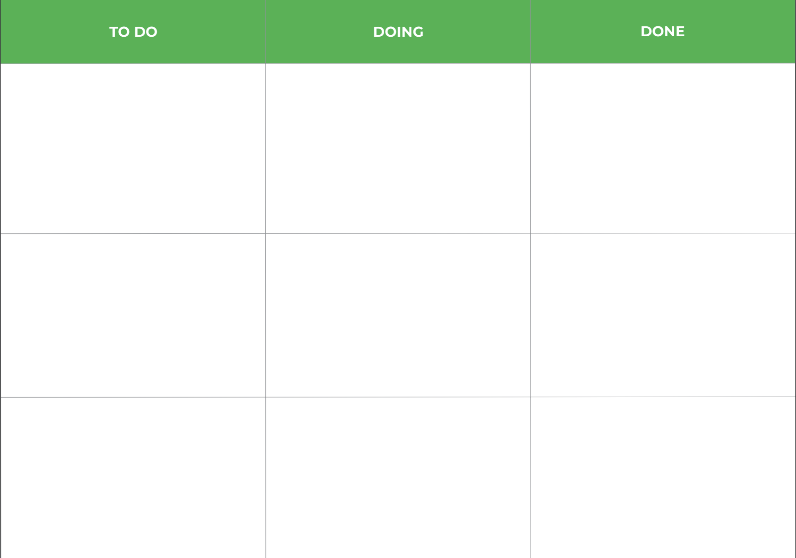

Kanban – zobacz, gdzie naprawdę zatrzymuje się praca zespołu
Zespół pracuje. Każdy ma dużo zadań. Kalendarze są pełne.
A projekt nadal stoi.
Problem często nie polega na tym, że ludzie robią za mało, ale na tym, że za dużo rzeczy jest rozpoczętych, część czeka na decyzję, a blokady pozostają niewidoczne.
Prosta tablica Kanban pomaga to zobaczyć.
Jak przygotować tablicę?
Podziel ją na trzy kolumny:

{{ c.label }}
Taki podstawowy układ został wykorzystany również w materiale 4change.
Każde zadanie zapisujemy na osobnej karteczce i umieszczamy w odpowiedniej kolumnie.
W miarę postępu pracy zadania przesuwają się z lewej strony na prawą.
Ale prawdziwe ćwiczenie zaczyna się dopiero teraz
Nie chodzi o samo przesuwanie karteczek.
Spójrzcie wspólnie na tablicę i odpowiedzcie:
{{ q }}
Można również wykorzystać tablicę dla całego zespołu, aby widoczny był postęp pracy poszczególnych osób i przepływ zadań. Materiał pokazuje przykłady zastosowania Kanbanu m.in. w sprzedaży, księgowości, obsłudze zgłoszeń i pracy zespołów projektowych.
Jaki efekt daje ćwiczenie?
Kanban pozwala zobaczyć pracę, która na co dzień ukryta jest w mailach, komunikatorach, notatkach i głowach pracowników.
Pomaga wychwycić blokady, uporządkować odpowiedzialność i sprawdzić, czy zespół rzeczywiście kończy zadania, czy przede wszystkim rozpoczyna kolejne.
{{ f.value }}
Pomożemy uporządkować przepływ zadań i wychwycić blokady w Waszym zespole.